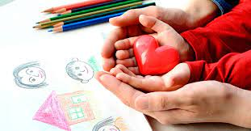

La educación es demasiado importante para dejarla sólo en manos de los maestros.
Por lo que los padres deben ser agentes más activos ante el proceso educativo de sus
hijos. Comprender que la dinámica educativa nos incluye a todos, es una actividad
permanente que integra a los hijos, a los maestros, a los padres y a la comunidad en
su conjunto.
Por ello la familia es la primera responsable de asumir el rol de educador, iniciando con la formación de
valores para
el buen desarrollo de un niño sano en la sociedad esto es, la función socializadora, que conecta al niño con
los valores socialmente aceptados. La enculturación como así ha dado en llamarse
consiste en la transmisión de representaciones y valores colectivos, indispensables
para el desarrollo y la evolución de los niños. Luego, las familias acompañan la evolución de los niños, en
el proceso de escolarización, que es la vía excelente para ir penetrando en otros ámbitos sociales diferentes
a la familia. Esta, a través de estas funciones apunta a educar a los niños para que puedan ser autónomos,
emocionalmente equilibrados, capaces de establecer vínculos afectivos satisfactorios.
Partimos de que los valores, las reglas, los ritos familiares están al servicio de la
estabilidad familiar, funcionan como sello de identidad para las distintas familias,
están al servicio del sentido de pertenencia. Por otro lado, existen fuerzas internas y
externas, como el proceso evolutivo de los miembros de una familia, los conflictos, las crisis que funcionan
como agentes de cambio. Del equilibrio entre ambas fuerzas
resultará el sano crecimiento de la familia.